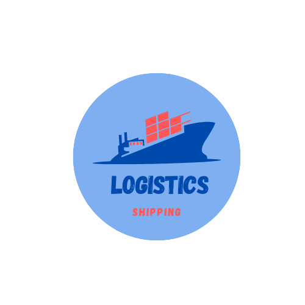

Shipment Delays in 2020 
What happened in 2020?

With the new year in, everyone expected 2020 to be like the roaring twenties. As we all know by now the unexpected happened. Quickly we entered a pandemic. Covid has now all sorts of variants, Omicron, Delta, or the mix between the Flu and Covid (Flurona). In March of 2020, the entire world stopped and quarantined. With this beginning, we entered the spiral of supply and demand. Ports, distribution centers, and shipping organizations are comparatively wrestling with specialist unlucky deficiencies.
By December of 2020, the biggest retail companies had reduced their employment rate to 500,000 positions. Organizations have seen a decline drawn down considerably at the beginning of the pandemic. Due to the lack of employees from USPS and UPS, Walmart started its shipping options. Paying charges for makers to speed conveyances by shipping items straightforwardly to stores rather than dissemination focuses. Other retailers that didn't pay makers when their shipments were deferred could battle to acquire items. Most customers aren't interested in long explanations when there's a delivery problem. They simply want to know how you intend to address the issue. At this point, it becomes more of a marketing issue. Building customer relations are a risk. Either the customer is satisfied or is another customer out the door.